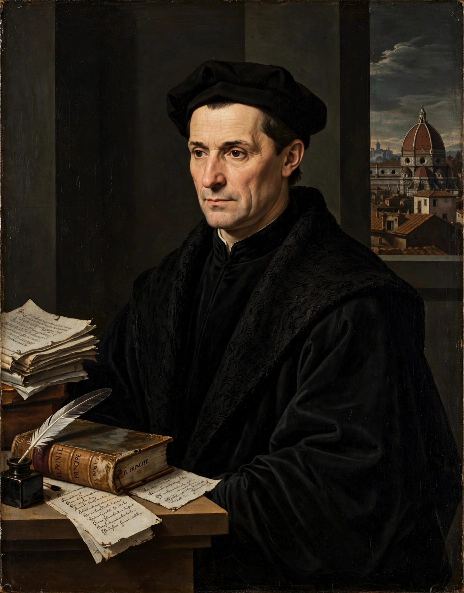

Machiavellianism (with the adjective Machiavellian) is a term with two distinct uses. In political discourse it denotes the doctrine associated with Niccolò Machiavelli's The Prince: cunning, duplicity and the subordination of morality to expediency in statecraft. In psychology, Machiavellianism is a personality trait centred on manipulativeness, cynical disregard for morality, and a focus on self-interest and deception.

The word entered usage in the 16th century, when Machiavelli's works were condemned by Catholic and Protestant writers alike; the Elizabethan stage villain "Machiavel" and the folk figure "Old Nick" preserve the polemical image. Modern scholarship generally holds that the historical Machiavelli, author also of the republican Discourses on Livy, was more nuanced than the caricature — a theorist of civic virtue adapting classical republicanism to a corrupt age.
Psychologists Richard Christie and Florence Geis developed the Mach IV test in the 1960s–70s to measure the trait. High scorers ("high Machs") tend to manipulate others, hold cynical views of human nature, and prioritise outcomes over relationships; low Machs are more trusting and rule-bound. Machiavellianism is one of the "dark triad" of personality traits, alongside narcissism and subclinical psychopathy, and has been extensively studied in organisational psychology, where it is associated with counterproductive work behaviour but sometimes with leadership emergence.
See also: Dark triad · The Prince · Realpolitik